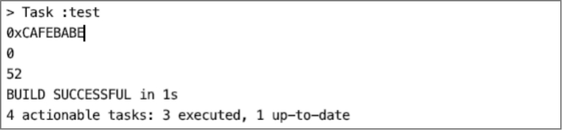

解析版本号

class文件结构的版本号分为主版本号和副版本号，它们共同构成class文件格式的版本号1，副版本号在前，主版本号在后，分别占两个字节。比如一个class文件的主版本号为56，副版本号为0，那么这个class文件结构的版本号就是52.0。版本号在class文件中的存储位置如下图所示。
提示：本章为描述class文件结构各项分别在class文件中的位置所绘制的示例图是连贯的。
版本号解析器的职责是从class文件字节缓存中读取出副版本号和主版本号，按顺序读取，先读取两个字节的副版本号，再读取两个字节的主版本号，因此版本号解析器的实现代码如下。
public class VersionHandler implements BaseByteCodeHandler {
// 版本号解析器排在魔数解析器的后面
@Override
public int order() {
return 1;
}
@Override
public void read(ByteBuffer codeBuf, ClassFile classFile) throws Exception {
// 读取副版本号
U2 minorVersion = new U2(codeBuf.get(), codeBuf.get());
classFile.setMinor_version(minorVersion);
// 读取主版本号
U2 majorVersion = new U2(codeBuf.get(), codeBuf.get());
classFile.setMagor_version(majorVersion);
}
}
class文件格式的各个版本与JDK版本的对应关系如下表格所示。
| Class文件格式版本 | JDK版本号 | 16进制表示 |
|---|---|---|
| 45.0 | 1.1 | 0x 00 00 00 2D |
| 46.0 | 1.2 | 0x 00 00 00 2E |
| 47.0 | 1.3 | 0x 00 00 00 2F |
| 48.0 | 1.4 | 0x 00 00 00 30 |
| 49.0 | 1.5 | 0x 00 00 00 31 |
| 50.0 | 1.6 | 0x 00 00 00 32 |
| 51.0 | 1.7 | 0x 00 00 00 33 |
| 52.0 | 1.8 | 0x 00 00 00 34 |
我们可以编写单元测试来验证框架是否能正确解析出该class文件的魔数和版本号，单元测试代码如下。
public class MagicAndVersionTest {
@Test
public void testMagicAndVersionHandler() throws Exception {
// 将class文件读取到ByteBuffer
ByteBuffer codeBuf = ClassFileAnalysisMain.readFile("RecursionAlgorithmMain.class");
// 解析class文件
ClassFile classFile = ClassFileAnalysiser.analysis(codeBuf);
System.out.println(classFile.getMagic().toHexString()); // 打印魔数
System.out.println(classFile.getMinor_version().toInt()); // 打印副版本号
System.out.println(classFile.getMagor_version().toInt()); // 打印主版本号
}
}
单元测试结果如下图所示。

1. 《Java虚拟机规范》Java SE8版本ClassFile结构 ↩
发布于：2021 年 07 月 24 日
作者: 吴就业
链接: https://wujiuye.gitbook.io/jvmbytecode
来源: GitBook开源电子书《深入浅出JVM字节码》（《Java虚拟机字节码从入门到实战》的第二版），未经作者许可，禁止转载!